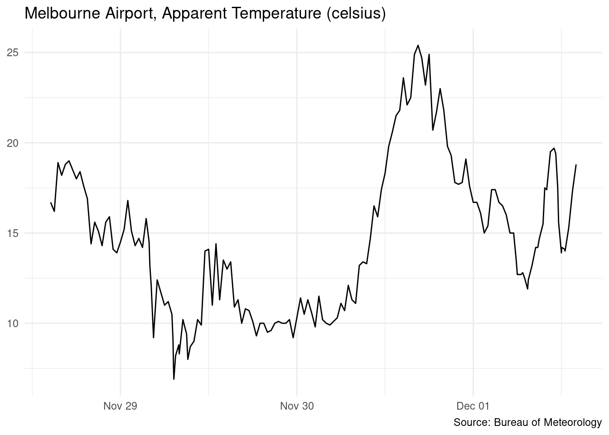

5.2 JSON data
Data provided via web APIs is often made available in JSON (JavaScript Object Notation) format, a simple human readable text format for storing hierarchical data.
There are a few R packages that parse JSON data, but jsonlite is our package of choice. Like readr and sf, jsonlite can read data directly from a URL.
Data for for the following examples is sourced from the Australian Bureau of Meteorology’s Latest Weather Observations for Melbourne Airport, made available directly from their website in JSON format.
# Bureau of Meteorology - Latest Weather Observations for Melbourne Airport
bom_url <- "http://www.bom.gov.au/fwo/IDV60901/IDV60901.94866.json"
bom_data <- jsonlite::fromJSON(bom_url)jsonlite has an intuitive mapping from JSON data types to R. The object returned from the BoM site is a list containing various pieces of metadata alongside our data of interest.
Check out the original URL to see the JSON data that has been mapped to this R structure.
str(bom_data)
#> List of 1
#> $ observations:List of 3
#> ..$ notice:'data.frame': 1 obs. of 4 variables:
#> .. ..$ copyright : chr "Copyright Commonwealth of Australia 2020, Bureau of Meteorology. For more information see: http://www.bom.gov.a"| __truncated__
#> .. ..$ copyright_url : chr "http://www.bom.gov.au/other/copyright.shtml"
#> .. ..$ disclaimer_url: chr "http://www.bom.gov.au/other/disclaimer.shtml"
#> .. ..$ feedback_url : chr "http://www.bom.gov.au/other/feedback"
#> ..$ header:'data.frame': 1 obs. of 8 variables:
#> .. ..$ refresh_message: chr "Issued at 2:11 pm EDT Tuesday 1 December 2020"
#> .. ..$ ID : chr "IDV60901"
#> .. ..$ main_ID : chr "IDV60900"
#> .. ..$ name : chr "Melbourne Airport"
#> .. ..$ state_time_zone: chr "VIC"
#> .. ..$ time_zone : chr "EDT"
#> .. ..$ product_name : chr "Capital City Observations"
#> .. ..$ state : chr "Victoria"
#> ..$ data :'data.frame': 161 obs. of 35 variables:
#> .. ..$ sort_order : int [1:161] 0 1 2 3 4 5 6 7 8 9 ...
#> .. ..$ wmo : int [1:161] 94866 94866 94866 94866 94866 94866 94866 94866 94866 94866 ...
#> .. ..$ name : chr [1:161] "Melbourne Airport" "Melbourne Airport" "Melbourne Airport" "Melbourne Airport" ...
#> .. ..$ history_product : chr [1:161] "IDV60901" "IDV60901" "IDV60901" "IDV60901" ...
#> .. ..$ local_date_time : chr [1:161] "01/02:00pm" "01/01:30pm" "01/01:00pm" "01/12:30pm" ...
#> .. ..$ local_date_time_full: chr [1:161] "20201201140000" "20201201133000" "20201201130000" "20201201123000" ...
#> .. ..$ aifstime_utc : chr [1:161] "20201201030000" "20201201023000" "20201201020000" "20201201013000" ...
#> .. ..$ lat : num [1:161] -37.7 -37.7 -37.7 -37.7 -37.7 -37.7 -37.7 -37.7 -37.7 -37.7 ...
#> .. ..$ lon : num [1:161] 145 145 145 145 145 ...
#> .. ..$ apparent_t : num [1:161] 18.8 17.3 15.3 14 14.1 14.2 13.9 15.6 17.5 19.4 ...
#> .. ..$ cloud : chr [1:161] "Mostly clear" "Mostly clear" "Mostly clear" "Cloudy" ...
#> .. ..$ cloud_base_m : int [1:161] 600 600 600 3300 3300 2610 2500 1110 1110 2340 ...
#> .. ..$ cloud_oktas : int [1:161] 1 1 1 8 8 3 8 1 1 3 ...
#> .. ..$ cloud_type_id : int [1:161] 6 6 6 NA NA NA 35 6 6 NA ...
#> .. ..$ cloud_type : chr [1:161] "Stratocumulus" "Stratocumulus" "Stratocumulus" "-" ...
#> .. ..$ delta_t : num [1:161] 4.5 4 3.2 2.7 2.8 3.3 3.6 7.5 7.4 7.7 ...
#> .. ..$ gust_kmh : int [1:161] 33 33 39 39 37 52 52 59 50 59 ...
#> .. ..$ gust_kt : int [1:161] 18 18 21 21 20 28 28 32 27 32 ...
#> .. ..$ air_temp : num [1:161] 21.7 20.4 19.4 18.5 18.6 19.3 19.5 23.1 24.2 25 ...
#> .. ..$ dewpt : num [1:161] 14 13.5 13.9 13.8 13.7 13.6 13.2 9.3 11.1 11.5 ...
#> .. ..$ press : num [1:161] 1005 1006 1005 1004 1004 ...
#> .. ..$ press_qnh : num [1:161] 1006 1006 1005 1005 1005 ...
#> .. ..$ press_msl : num [1:161] 1005 1006 1005 1004 1004 ...
#> .. ..$ press_tend : chr [1:161] "-" "-" "-" "-" ...
#> .. ..$ rain_trace : chr [1:161] "0.0" "0.0" "0.0" "0.0" ...
#> .. ..$ rel_hum : int [1:161] 61 64 70 74 73 69 67 41 43 42 ...
#> .. ..$ sea_state : chr [1:161] "-" "-" "-" "-" ...
#> .. ..$ swell_dir_worded : chr [1:161] "-" "-" "-" "-" ...
#> .. ..$ swell_height : logi [1:161] NA NA NA NA NA NA ...
#> .. ..$ swell_period : logi [1:161] NA NA NA NA NA NA ...
#> .. ..$ vis_km : chr [1:161] "10" "10" "10" "10" ...
#> .. ..$ weather : chr [1:161] "-" "-" "-" "Showers" ...
#> .. ..$ wind_dir : chr [1:161] "N" "NNW" "N" "NNE" ...
#> .. ..$ wind_spd_kmh : int [1:161] 22 22 28 30 30 33 35 39 37 32 ...
#> .. ..$ wind_spd_kt : int [1:161] 12 12 15 16 16 18 19 21 20 17 ...JSON data is often hierarchically structured or nested in this way, and you’ll need to work your way through the structure to get to the data you need.
class(bom_data)
#> [1] "list"
names(bom_data)
#> [1] "observations"
names(bom_data$observations)
#> [1] "notice" "header" "data"
class(bom_data$observations$data)
#> [1] "data.frame"
bom_data$observations$data %>% as_tibble()
#> # A tibble: 161 x 35
#> sort_order wmo name history_product local_date_time local_date_time…
#> <int> <int> <chr> <chr> <chr> <chr>
#> 1 0 94866 Melb… IDV60901 01/02:00pm 20201201140000
#> 2 1 94866 Melb… IDV60901 01/01:30pm 20201201133000
#> 3 2 94866 Melb… IDV60901 01/01:00pm 20201201130000
#> 4 3 94866 Melb… IDV60901 01/12:30pm 20201201123000
#> 5 4 94866 Melb… IDV60901 01/12:27pm 20201201122700
#> 6 5 94866 Melb… IDV60901 01/12:03pm 20201201120300
#> 7 6 94866 Melb… IDV60901 01/12:00pm 20201201120000
#> 8 7 94866 Melb… IDV60901 01/11:37am 20201201113700
#> 9 8 94866 Melb… IDV60901 01/11:30am 20201201113000
#> 10 9 94866 Melb… IDV60901 01/11:14am 20201201111400
#> # … with 151 more rows, and 29 more variables: aifstime_utc <chr>, lat <dbl>,
#> # lon <dbl>, apparent_t <dbl>, cloud <chr>, cloud_base_m <int>,
#> # cloud_oktas <int>, cloud_type_id <int>, cloud_type <chr>, delta_t <dbl>,
#> # gust_kmh <int>, gust_kt <int>, air_temp <dbl>, dewpt <dbl>, press <dbl>,
#> # press_qnh <dbl>, press_msl <dbl>, press_tend <chr>, rain_trace <chr>,
#> # rel_hum <int>, sea_state <chr>, swell_dir_worded <chr>, swell_height <lgl>,
#> # swell_period <lgl>, vis_km <chr>, weather <chr>, wind_dir <chr>,
#> # wind_spd_kmh <int>, wind_spd_kt <int>Just for fun, here’s the temperature as a line graph.
library(ggplot2)
bom_data$observations$data %>%
ggplot(aes(x = lubridate::as_datetime(local_date_time_full), y = apparent_t)) +
geom_line() +
theme_minimal() +
theme(legend.position = "bottom",
axis.title = element_blank(),
legend.title = element_blank()) +
labs(title = "Melbourne Airport, Apparent Temperature (celsius)",
caption = "Source: Bureau of Meteorology")